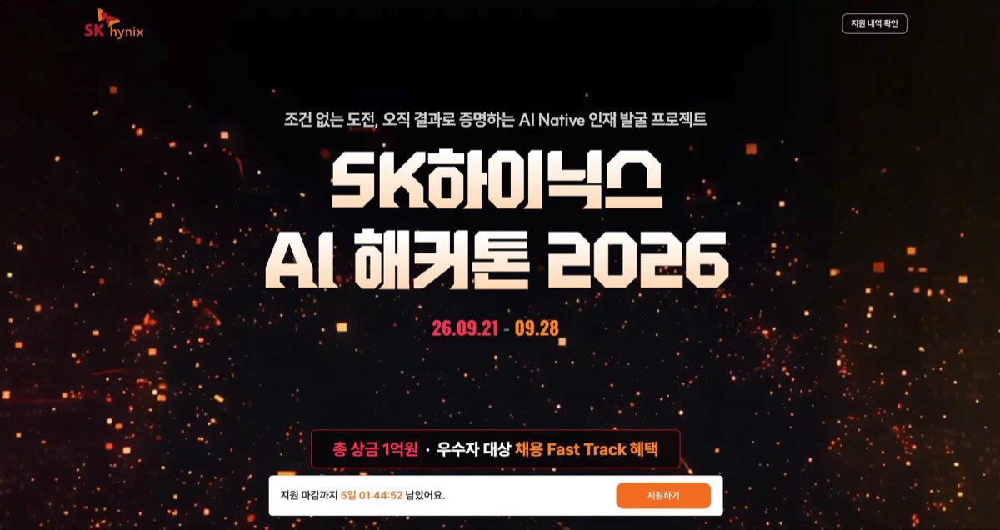

회사별로 프로젝트와 역할, 판단 이유, 구현·개선과 성과를 정리했습니다.
멋쟁이사자처럼 백엔드·인프라 엔지니어, 팀 리드 · 2024.07 ~ 현재
부트캠프·기업교육·채용·AI 학습 서비스의 Python 백엔드와 클라우드 인프라를 맡습니다. 요구사항 검토와 개발 우선순위 조율부터 서비스 출시·운영까지 이어서 맡으며, 개발팀의 코드·문서·AI 도구 활용 기준을 정리하고 공유했습니다.
기술: Python, FastAPI, SQLAlchemy, PostgreSQL, Redis, Kubernetes(EKS·OKE), Terraform, ArgoCD, AWS, OCI, OpenAI API, Claude Code
채용 플랫폼 ATS 신규 구축 2026.04 ~ 현재
프로젝트 수강생·수료생의 구직 활동과 기업의 채용, 운영팀의 취업 지원을 한 플랫폼에서 처리하는 서비스입니다. 클라우드 이관 시기와 맞물려 백엔드와 운영 배포 기반을 함께 마련해야 했습니다.
맡은 역할 구직자·기업·운영용 API와 데이터 설계, 백엔드 개발, 인증 연동과 운영 배포를 맡았습니다. 팀 구성은 백엔드 1(본인), 프론트 2, 기획 1입니다.
판단과 이유 개인정보를 저장하면서 검색도 지원해야 했습니다. 편리한 검색보다 평문 보관을 없애는 것을 우선했고, 전형 종료 뒤 열람과 보유기간 경과 뒤 파기를 하나의 정책으로 다뤘습니다.
구현·개선 구직자용 커리어홈과 기업·운영용 백오피스의 API를 나눠 공고·지원·전형·취업관리 기능을 구현하고 Keycloak SSO를 연동했습니다. 개인정보를 암호화하고 HMAC-SHA256 blind index로 검색하게 했습니다. 부분 일치 검색은 제공하지 않는 대신 평문 검색 컬럼을 두지 않았습니다. 승인·반려 동시 요청은 현재 상태를 조건으로 갱신하고 변경된 행 수로 충돌을 판정했습니다. 게시 예정·마감 여부는 시간과 기간으로 계산해 별도 스케줄러를 없앴습니다. 전형 종료 시 화면과 다운로드 API를 함께 차단했습니다. 보유기간이 지난 자료는 첨부파일 삭제와 DB 정리를 순서대로 처리하고, 대량 파기 전 사전 알림과 일일 임계값 검사를 넣었습니다. 내보내기를 암호화 XLSX로 바꾸고 파일 생성과 감사 기록, 개인정보 가림 정책을 함께 적용했습니다. 파일 반출 경로도 화면과 같은 접근 기준을 따르게 했습니다. 결과와 성과 2026년 6월 첫 운영 릴리스로 서비스를 열었습니다. 2026년 9월 확인 당시 기업 61곳과 공고 132건이 등록돼 있었고 지원·취업 상담을 플랫폼에서 처리했습니다. 지원자 1만 행 내보내기 시험에서 최대 메모리가 34.5MB에서 2.1MB로 줄었습니다. 기술: Python(FastAPI), PostgreSQL, Redis, Keycloak, OCI Object Storage·Vault·Email Delivery, kustomize, ArgoCD
기업교육 B2B 플랫폼 신규 구축 2024.11 ~ 2025.03
프로젝트 기업·기관 고객이 교육과정을 운영하고 참가자의 학습 현황을 관리하는 플랫폼을 새로 구축한 프로젝트입니다.
맡은 역할 기획 분석과 데이터 설계, 백엔드 개발, 개발 일정과 우선순위 조율, 개발·운영 환경 구성을 맡았습니다.
판단과 이유 기존 부트캠프의 도메인 쿠키와 과정 정책을 그대로 적용할 수 없었습니다. 공통 서비스는 재사용하면서 기업교육의 로그인·참가자·집계 기준을 분리했습니다.
구현·개선 기획을 백로그로 나누고 기업교육용 로그인, 기관 관리자·참가자 관리, 권한 일괄 등록·삭제와 비밀번호 초기화 API를 개발했습니다. 과정·권한·진도·인증 서비스에 필요한 API를 나눠 구현하고 백엔드와 프론트엔드 작업 순서를 조율했습니다. 기업 관리자 대시보드, 기업 공지와 설문 통계를 추가했습니다. 기업교육의 설문 집계는 실제 등록된 참가자를 기준으로 계산하도록 국비 과정 경로와 분리했습니다. 개발·운영 서버를 구성하고 운영 데이터를 준비해 첫 배포와 후속 기능 출시를 맡았습니다. 결과와 성과 기업교육 전용 로그인부터 기관·참가자·학습 현황 관리까지 운영 가능한 백엔드를 구축하고 배포했습니다.
기술: Python(FastAPI), PostgreSQL, Redis, Kubernetes(EKS)
SK하이닉스 AI 해커톤 접수 플랫폼 2026.08 ~ 현재

프로젝트 전국 공개 모집을 받는 AI 해커톤을 사내 SaaS 플랫폼으로 운영한 프로젝트입니다. 접수 일정은 정해져 있었지만 지원 정책과 수용 가능한 부하의 근거가 부족했습니다.
맡은 역할 요구사항과 정책 정리, 백엔드·인프라 개선, 지원·과제 제출 화면과 대회 설정 어드민 일부를 맡았습니다.
판단과 이유 서버를 늘리기 전에 요청 하나에 드는 비용과 DB 연결 점유를 줄이기로 했습니다. 동시에 지원이 몰려도 제출의 정합성과 정상 지원자의 접근을 지키는 데 우선순위를 뒀습니다.
구현·개선 비회원·해외 번호·중복 지원처럼 미정인 정책마다 선택지를 제안했습니다. 해외 번호 사용자를 위해 이메일 인증을 제안하고 후반에는 고객사 요구를 직접 확인하도록 전달 경로를 조정했습니다. 100만 DAU 가정에서 환산한 초당 3,000건을 대비 목표로 두고 k6로 반복 측정했습니다. 요청별 DB 연결, 트랜잭션 안의 메일 발송과 누수 트랜잭션을 순서대로 고쳤습니다. 운영 환경에서 PgBouncer의 처리 한계를 확인하고 연결 예산 안에서 배치를 조정했습니다. 로드밸런서 대역폭과 게이트웨이 요청 제한도 함께 점검했습니다. 지원·과제 제출 양식, 임시저장과 제출 게이트, 대회 설정 화면을 구현했습니다. IP 제한은 같은 네트워크의 정상 지원자가 함께 막히지 않도록 조정했습니다. 내부용 주소가 검색 결과에 노출되는 문제를 noindex로 막고 개인정보 수탁사 점검표를 실제 시스템과 대조해 다시 작성했습니다. 결과와 성과 테스트 환경에서 초당 3,000건을 10분간 처리했고 p95 응답은 1.3초에서 25ms로 줄었습니다. 접수 전 운영 환경의 초당 3,000건 램프 시험을 에러율 0.001%로 통과했습니다. 이 시험의 p95는 2.5초로 테스트 환경 결과와 구분합니다. 실제 접수 기간을 장애 없이 마쳤습니다. 기술: Python(FastAPI), Next.js, PostgreSQL, PgBouncer, k6, OKE, Kong, Karpenter
전사 인프라 이관과 비용·배포 환경 개선 2024.10 ~ 2026.08
프로젝트 AWS EKS에서 OCI OKE로 전사 서비스를 옮기면서 인프라 비용과 구성 관리, 배포 방식을 함께 개선한 프로젝트입니다.
맡은 역할 기존 환경 조사, 이관 설계와 개발 환경 구축, 운영 인수, 단계별 전환과 잔존 자원 정리를 맡았습니다.
판단과 이유 콘솔에만 있던 구성을 재현 가능한 코드로 옮기고, 실제 트래픽을 확인한 뒤 전환하기로 했습니다. 비용은 클라우드 변경만으로 설명하지 않고 유휴 자원·지원 과금·외부 솔루션 사용까지 검토했습니다.
구현·개선 계정별 청구서와 운영 구성을 대조해 쓰지 않는 서버·디스크·네트워크 자원과 연장 지원 과금을 정리했습니다. Terraform, ArgoCD, Helm으로 OKE 환경을 구성하고 시크릿을 Vault와 ESO로 관리하게 했습니다. 개발 환경 확인 뒤 운영을 인수해 전환했습니다. 인증서 발급의 DNS 의존성을 고려해 라우팅 준비, DNS 전환, TLS 적용 순서를 나눴습니다. 전환 뒤에도 트래픽을 확인해 남아 있던 API를 옮겼습니다. Git에 기록된 배포 이미지와 실제 실행 이미지를 대조하는 절차를 정리했습니다. 준비되지 않거나 종료 중인 Pod로 요청이 가는 문제도 헬스체크와 종료 대기로 보완했습니다. 노드의 디스크·Pod 슬롯·네트워크 제약을 구분해 용량을 조정하고 보안 패치가 반영된 노드로 교체했습니다. 애드온 업데이트와 시크릿 동기화 장애의 대응 절차도 운영 문서에 남겼습니다. 결과와 성과 서비스 61종을 이관했습니다. 인프라 구성과 배포 변경을 Terraform·GitOps 저장소에서 확인할 수 있게 됐습니다. 2024~2026년 유휴 자원 회수, 클라우드 이관과 외부 웹 IDE 교체를 함께 진행해 월 인프라 비용을 청구서 실측 기준 56% 줄였습니다. 기술: Kubernetes, AWS EKS, OCI OKE, Terraform, ArgoCD, Helm, Vault·ESO, Keycloak, Kong
부트캠프·KDC LMS 개발과 운영 자동화 2024.07 ~ 현재
프로젝트 지원·회원·학습·평가·결제·취업관리를 연결하는 부트캠프 LMS와 KDC 서비스의 개발·운영을 맡았습니다.
맡은 역할 Python 백엔드 개발, 운영팀 업무의 어드민 전환, 외부 시스템 연동과 성능·정합성 개선을 맡았습니다.
판단과 이유 운영팀이 반복 작업마다 개발자를 기다리는 일을 줄이는 데 우선순위를 뒀습니다. 결제·권한·수료 상태는 여러 서비스 사이에서 일치해야 하므로 실패와 중복 처리도 함께 설계했습니다.
구현·개선 클래스챗 메시지 템플릿과 발송 일정을 DB 수정에서 어드민 관리로 옮겼습니다. 지원부터 결제까지의 안내 메일은 스티비와 연동해 퍼널별로 자동 발송했습니다. 부트캠프 홈과 취업관리·취업률 KPI를 개발하고 기존 홈 도메인 이전을 맡았습니다. 메인페이지 응답 데이터와 권한·진도 조회의 Redis 경로를 줄여 병목을 개선했습니다. 외부 코딩 실습 솔루션을 자체 웹 IDE로 대체했습니다. Java·Python·JavaScript·C# 실행과 실행 결과 기반 채점을 지원합니다. 분할 결제를 결제 그룹·회차 구조로 개발했습니다. 환불과 수강권 만료를 연결하고 행 잠금·멱등 처리로 동시 취소 이력이 중복되지 않게 했습니다. 수강권·회원 동기화 웹훅에 서명·재시도·멱등 처리를 적용했습니다. 수신 이력과 원본 데이터 조회로 유실을 보완하고 외부 연동 실패가 로그인을 막지 않게 했습니다. 국비 수료·HRD-Net 전송에서 필드 오류와 예외 누락을 고치고 재조회·중복 전송 방지를 넣었습니다. 배치가 실패했는데 성공으로 보이는 경로도 수정했습니다. 요청마다 만들던 HTTP·Redis·DB 연결의 수명을 조정하고 공유 자원을 재사용했습니다. 외부 발송과 DB 기록의 실패를 나눠 중복 발송 가능성을 줄였습니다. 결과와 성과 메시지 변경은 운영팀이 개발자를 기다리지 않고 처리하게 됐습니다. 관련 업무는 월 20시간 줄었습니다. 안내 메일 작업은 과정당 37.5시간에서 0.5시간으로, OT·개강 안내 문의는 약 40건에서 1건으로 줄었습니다. 메인페이지 API 응답은 2초대에서 약 100ms로 줄었습니다. 자체 웹 IDE 도입으로 외부 실습 솔루션 비용을 없앴습니다. 기술: Python(FastAPI), PostgreSQL, Redis, Rocket.Chat, Stibee, Kubernetes, GitHub Actions
멀티테넌트 SaaS LMS와 고객사 개통 2025.07 ~ 현재
프로젝트 코드베이스 하나로 여러 교육기관의 LMS를 운영하고 기존 국비 과정 기능을 함께 공급하는 서비스입니다.
맡은 역할 멀티테넌트 설계 참여, 회원·인증·교육과정·수강생 백엔드 개발, 국비 과정 기능 이전과 고객사 개통을 맡았습니다.
판단과 이유 기관마다 시스템을 새로 배포하지 않으면서 기능 접근과 인증 정책은 분리해야 했습니다. 레거시의 과목 단위 기능은 SaaS의 과정 단위 도메인에 맞춰 옮겼습니다.
구현·개선 회원가입·인증·비밀번호 재설정과 과정·수강생 API를 개발했습니다. 새 기관은 어드민 등록으로 개통하도록 호스트·인증서 구성을 준비했습니다. 레거시에 흩어진 공결·출결·수강증명서 기능을 과정 단위로 옮겼습니다. 고용24 출결 수집과 출석률 계산, 개인정보 암호화와 증명서 PDF 발급을 연결했습니다. 기관별 메뉴·기능 접근과 본인인증 정책을 서버에서 검사하도록 했습니다. 탈퇴 시 회원 정보와 사본을 가명 처리하고 법적 보관 대상과 구분했습니다. 결과와 성과 서울대학교와 K Tech College(베트남)에 출시하고 한화 브랜딩캠프에 국비 과정 운영 기능을 배포했습니다. 공결 신청을 시스템으로 이전하면서 출석 입력 요청의 처리 시간이 건당 평균 1시간에서 30분으로 줄었습니다. 새 고객사는 어드민 등록으로 과정을 열 수 있게 됐습니다. 기술: Python(FastAPI), PostgreSQL, Redis, 고용24 API, Kong, cert-manager
라이브룸 실시간 교육 플랫폼 구축 2025.04 ~ 현재
프로젝트 여러 강의실의 실시간 화상수업을 자체 운영하는 플랫폼입니다. 녹화와 실시간 자막, STT 기반 요약노트를 제공하고 강사 모니터링과 부정훈련 방지를 위한 참가자 얼굴 인식을 연결했습니다.
맡은 역할 Jitsi 기반 다중 화상회의 환경과 LMS 연동 API를 구축하고 녹화·실시간 자막·STT 요약노트와 수업 모니터링 기능을 연결했습니다. 클라우드 선정과 용량 검증, 운영 개선도 맡았습니다.
판단과 이유 외부 화상회의 도구에 나뉘어 있던 수업 운영과 학습 데이터를 LMS에서 함께 다루도록 구성했습니다. 수업 중에는 자막과 모니터링을 활용하고 수업 후에는 녹화와 요약노트로 복습할 수 있게 했습니다. 도입 환경은 같은 조건으로 측정한 비용과 수용 인원을 비교해 선택했습니다.
구현·개선 실시간 다중 화상회의 Jitsi Meet과 미디어 브리지(JVB)를 나눠 여러 강의실의 수업을 동시에 운영하도록 구성했습니다. LMS의 입장 토큰과 강의실 생성·종료 API를 개발해 수강 과정에서 화상수업으로 이어지게 했습니다.녹화와 실시간 자막 Jibri 녹화와 Jigasi STT를 연결했습니다. 강의 음성을 실시간 자막으로 제공하고 녹화와 STT 결과를 S3에 자동 저장하도록 구성했습니다.STT 기반 요약노트 강의 음성을 텍스트로 변환한 뒤 요약노트를 생성해 수강생에게 제공했습니다. 수업 기록을 복습 자료로 활용하도록 학습 기능에 연결했습니다.강사 모니터링과 부정훈련 방지 강사 모니터링(KAI)을 연결해 수업 품질 관리를 지원했습니다. 참가자 얼굴 인식을 적용해 부정훈련을 방지하기 위한 참여 확인 기능도 갖췄습니다.ALEX 챗봇 연동 설계 수업에서 수집한 STT 데이터를 ALEX 챗봇의 수업 맥락으로 활용하는 연동 구조를 설계했습니다.용량 검증과 운영 개선 클라우드 4곳에서 최대 100명 전사 테스트로 비용과 수용 인원을 비교하고 Selenium Grid로 다중 회의실 부하를 검증했습니다. 미디어 브리지 분산과 스트림 설정을 조정해 인원 증가에 따른 화면·음성 문제를 개선했습니다.STT 처리 안정화 요약에 사용할 STT는 실시간 처리의 안정성과 비용을 비교해 녹화 파일 기반 비동기 처리로 바꿨습니다. 재연결 경로의 메모리 누수도 수정했습니다.결과와 성과 22개 과정, 등록 수강생 900여 명 규모의 자체 화상수업 환경을 운영했습니다. 수업 진행·기록·복습과 수업 품질 관리를 LMS에 연결해 외부 도구에 나뉘어 있던 기능을 함께 제공했습니다. STT 기반 요약노트는 21개 과정에서 제공했고 누적 2,973회 열람됐습니다. 강의 음성 기록을 수강생이 사용하는 복습 자료로 연결했습니다. 부하 시험에서는 단일 회의실 152명, 다중 회의실 총 265명이 8시간 동안 재접속 없이 유지됐습니다. 기술: Jitsi Meet·JVB·Jigasi·Jibri, WebRTC, Python(FastAPI), OpenAI API, Docker Compose, OCI, KT Cloud, S3, STT, Selenium Grid
AI 학습 튜터와 요약노트 개발 2025.09 ~ 현재
프로젝트 라이브 강의의 STT와 강의자료를 수강생의 질의응답과 복습에 활용하는 AI 학습 서비스입니다.
맡은 역할 STT 인덱서, RAG 학습 튜터와 STT 기반 요약노트 개발, 튜터의 생성·대화 기록 오류 개선을 맡았습니다.
판단과 이유 튜터가 정답을 알려주는 데 그치지 않고 학습을 돕도록 목표를 제안했습니다. 자료가 없는 요청은 생성 전에 걸러 근거 없이 수업 내용을 요약하지 않게 했습니다.
구현·개선 STT를 청킹·임베딩해 pgvector에 저장하는 인덱서를 만들고 검색 결과를 학습 튜터의 응답 생성에 연결했습니다. 질문 복잡도에 따른 질문 개선·답변 검증 흐름을 구현했습니다. 세부 규칙을 계속 늘리는 방식보다 가이드라인 중심으로 기획을 정리하자고 제안했습니다. STT 기반 요약노트를 개발했습니다. 전처리와 청킹 방식을 조정하고 이전 강의 데이터로 결과를 비교했습니다. 자료가 없는 수업 요약 요청의 생성 경로를 차단했습니다. 공유 DB 세션의 실패가 뒤의 대화 기록 저장까지 번지던 문제는 오류 직후 rollback하도록 수정했습니다. 결과와 성과 21개 과정에서 제공한 STT 요약노트가 누적 2,973회 열람됐습니다. 강의 데이터를 실제 복습 기능으로 연결했습니다.
기술: Python(FastAPI), OpenAI API, PostgreSQL·pgvector, SQLAlchemy(Async), SSE
미래이력서 AI 생성·자동 검수 서비스 2026.09 ~ 2026.10
프로젝트 마케팅팀이 만들고 메일로 전달하던 지원자용 AI 이력서를 사이트 안에서 생성·검수·노출하도록 바꾼 프로젝트입니다.
맡은 역할 프로젝트 리더로 백엔드·어드민·홈의 작업을 나누고 API, 생성 파이프라인과 화면 개발, 운영 배포를 맡았습니다.
판단과 이유 사람이 매번 결과물을 읽지 않아도 품질을 확인할 기준이 필요했습니다. 규칙으로 확인할 항목은 코드로 검사하고 내용 판단만 LLM에 맡겼습니다.
구현·개선 PRD를 API와 화면 단위 작업으로 나눠 공통 백엔드·과정 API·어드민·홈에 걸쳐 구현했습니다. 조건부 DB 갱신과 시도 토큰으로 중복 생성을 막았습니다. 상태 동기화 유실은 원본 데이터 재조회로 복구하고 조회·노출 판정을 공통 함수로 맞췄습니다. 기획 체크리스트를 코드 검사와 LLM 판정으로 나눠 97점 기준으로 채점했습니다. 미통과 시 재생성하되 최대 10회로 비용을 제한했습니다. 가상 지원자 8명으로 모델 2종과 프롬프트를 비교했습니다. 프롬프트는 객체 저장소 원본과 Redis 캐시로 관리해 배포 없이 과정별로 고칠 수 있게 했습니다. 마케팅팀이 직접 확인할 수 있는 QA 안내서를 작성했습니다. 생성 HTML은 스크립트 실행이 제한된 화면에서 보여주고 개인정보 조회·반출 통제도 적용했습니다. 결과와 성과 2026년 10월 19일 운영에 배포해 사이트 안에서 이력서를 생성하고 자동 검수한 뒤 노출하는 흐름을 만들었습니다. 가상 지원자 비교 실험에서 예시 문구를 그대로 베낀 결과가 12건에서 0건으로 줄었고, 오염 입력 8종을 탐지했습니다. 기술: Python(FastAPI), PostgreSQL, Redis, S3, OpenAI API, Next.js
개발 기준·운영 문서와 사내 AI 도구 도입 2024.07 ~ 현재
프로젝트 코드·운영 질문이 특정 사람에게 몰리고 개발 기준이 리뷰어의 기억에 의존하던 업무 방식을 개선했습니다.
맡은 역할 팀 리드로 문서와 코드 검토 기준을 정리하고 CI·사내 도구에 적용했습니다. 주간 싱크업과 인턴 과제 배정·리뷰도 맡았습니다.
판단과 이유 같은 질문에 반복 답하거나 사람마다 다른 기준으로 검토하는 일을 줄이고, 팀원과 AI 도구가 같은 근거로 코드를 이해하게 하려 했습니다.
구현·개선 용어·코드 구조·테스트와 운영 지식을 코드 옆 문서로 관리하고 CI·PR 단계에서 함께 갱신하게 했습니다. 코드 지도는 식별자와 파일 위치가 실제 코드에 있는지 검사했습니다. 레이어 경계와 명명·파일 구조 규칙을 CI에서 검사하도록 만들고 기존 계층 위반 22건을 정리했습니다. Slack 코드 설명 봇을 개선해 근거를 찾아 답하고 확인하지 못한 범위를 표시하게 했습니다. 도입 후보 도구는 비교 시험에서 정확도가 떨어지면 쓰지 않았습니다. PR 본문 작성·권한 등록·배포·검증을 돕는 사내 스킬과 운영 에이전트를 배포했습니다. Agent Skills·Plugin System의 활용법을 전 직군 대상 사내 세미나에서 공유했습니다. 사내 짧은 링크 발급 도구로 외부 유료 구독을 대체했습니다. 링크와 클릭 기록은 사내에서 관리하게 했습니다. 결과와 성과 코드 옆 운영 문서가 회사 저장소 18곳에 도입됐고 관련 문서 변경의 3분의 2 이상을 팀원이 작성했습니다. 개발 기준을 리뷰어만 확인하던 방식에서 CI가 검사하는 방식으로 옮겼습니다. 사내 스킬 24종과 인프라 운영 에이전트 9종을 배포하고 세미나에서 공유했습니다. 기술: Claude Code, Agent Skills, GitHub Actions, Python 정적 검사, Slack API, LLM
EKS 지원 종료 대응과 단계별 업그레이드 2024.09 ~ 2025.11
프로젝트 지원 종료가 다가온 EKS 클러스터의 버전과 노드·애드온을 갱신한 작업입니다.
맡은 역할 현재 설치 구성 조사, 버전별 변경 검토, 개발 환경 검증과 운영 순차 적용을 맡았습니다.
판단과 이유 버전 번호만 올리면 제거되는 API와 스토리지·노드 설정 때문에 서비스가 깨질 수 있어, 영향받는 구성부터 확인했습니다.
구현·개선 공식 변경 문서와 업그레이드 인사이트를 클러스터의 애드온·리소스와 대조했습니다. EBS CSI와 StorageClass를 준비하고 ArgoCD·kube-proxy·CoreDNS의 호환 버전을 적용했습니다. 상태 저장 워크로드를 옮긴 뒤 오래된 노드를 교체했습니다. 개발 환경 확인 뒤 클러스터별로 순차 적용했습니다. 노드 이미지 교체 시 Pod 수용 상한이 달라지는 점도 확인해 용량을 검토했습니다. 결과와 성과 EKS를 1.22에서 운영 기준 1.32까지 단계적으로 올리고 연장 지원 과금을 없앴습니다.
기술: AWS EKS, Kubernetes, ArgoCD, Helm, EBS CSI
장애 감지·자동 복구와 AI 원인 분석 2026.08 ~ 2026.10
프로젝트 외부 API 무응답이 서비스 전체 정지로 번지고 헬스체크가 이를 감지하지 못한 장애를 계기로 감지·복구·분석을 함께 개선했습니다.
맡은 역할 이벤트 루프 차단 원인 분석과 코드 수정, 헬스체크·알림 변경, 규칙·LLM 기반 분석 봇 개발을 맡았습니다.
판단과 이유 복구는 Kubernetes가 수행하고 AI는 근거 해석을 맡도록 역할을 나눴습니다. 봇의 분석 오류가 운영 변경으로 이어지지 않도록 변경 권한은 주지 않았습니다.
구현·개선 응답 시간이 외부 API 타임아웃의 배수로 늘어나는 현상을 추적했습니다. await 없는 핸들러를 확인해 동기 I/O를 threadpool로 격리하고 사용자 경로의 타임아웃을 조정했습니다. 이벤트 루프가 멈춰도 통과하는 tcpSocket 헬스체크를 HTTP 방식으로 바꿨습니다. 개발 환경에서 앱을 직접 멈춰 격리와 재시작을 확인한 뒤 적용했습니다. 로그 알림에 원인 후보와 근거를 붙이는 봇을 만들었습니다. 규칙으로 먼저 신호를 분류하고 LLM이 해석하며 인용 문장이 실제 로그에 있는지 발송 전에 대조합니다. 결과와 성과 개선 후 외부 API 무응답 상황에서 동시 요청 60건이 모두 응답했습니다. HTTP 헬스체크로 같은 정지 증상을 감지하고 자동 복구하게 됐습니다. 과거 장애 2건의 재현 자료에서 기록된 원인을 찾았습니다. 2주치 알림 18건 중 9건은 LLM을 호출하지 않고 규칙으로 판정했습니다. 기술: FastAPI, Kubernetes(OKE), Loki, Alertmanager, Slack API, LLM
인증·인가와 Python 서비스 보안 개선 2025.12 ~ 현재
프로젝트 서비스별 인증·인가, 로그인, 자격증명과 의존성 관리 기준을 정리하고 오래된 Python 환경을 개선한 작업입니다.
맡은 역할 서비스 인증·인가 점검, 쿠키 기반 로그인 재설계, 보안 감지 알림과 최소 권한 적용, Python 전환 검증을 맡았습니다.
판단과 이유 기존 모바일·웹 클라이언트의 동작은 유지하면서 서버와 인프라의 보안을 개선했습니다. 감사 알림도 필요한 필드만 전달하도록 해 감지 과정의 정보 노출을 줄였습니다.
구현·개선 서비스의 공개·관리자 API 접근 기준을 대조하고 공통 인증 검사를 보완했습니다. 로그인은 백엔드가 HttpOnly 쿠키를 발급하도록 바꿨습니다. OCI·AWS 감사 로그, Kubernetes 변경, 인증 관리자 이벤트를 알림으로 연결했습니다. 서비스 계정 권한과 장기 키 사용도 실사용 범위에 맞춰 줄였습니다. Python 서비스 13개를 3.13과 pydantic v2로 전환했습니다. 구·신 서버를 같은 시드 데이터로 실행해 오류 응답·인증 상태 코드·직렬화와 외부 요청을 비교하고 필요한 호환 처리를 넣었습니다. 클라우드 빌드·배포에는 OIDC를 적용하고, 자격증명 교체와 점검 절차를 문서·자동 검사에 남겼습니다. 결과와 성과 Python 전환 대상 13개 서비스의 보안 권고를 0건으로 줄였습니다. 권한 검사와 비밀값 관리 기준을 공통 검사·팀 문서로 남겼습니다. 감지 규칙은 과거 감사 로그로 오탐 여부를 확인했습니다. 기술: Python 3.13, FastAPI, pydantic v2, Keycloak, Kong, Terraform, GitHub Actions OIDC, CloudTrail, OCI Audit
브랜드 캠페인 AI 챗봇 이벤트 2025.10 ~ 2026.01
프로젝트 브랜드 필름의 캐릭터와 대화하고 퀴즈·추첨권·경품으로 이어지는 캠페인 이벤트입니다.
맡은 역할 대화·퀴즈·추첨권·경품 API와 데이터·작업 범위 설계, 백엔드 구현과 출시를 맡았습니다. 팀 구성은 백엔드 1(본인), 프론트 3, 디자인 1, PM 1입니다.
판단과 이유 온에어 일정에 맞춰 출시하면서 참여 문턱을 낮추기 위해 대화는 비로그인으로 열고 추첨권을 받는 시점에만 로그인을 요구했습니다.
구현·개선 챗봇 흐름, API, 테이블과 캐시, 스케줄 작업·알림톡의 범위를 정하고 스트리밍 대화·퀴즈·추첨 기능을 구현했습니다. 응답 상태와 OpenAI 요청 ID를 남겨 정상·오류·시간 초과·한도 초과를 구분했습니다. 경품 추첨 결과를 운영용 시트에 기록하도록 연결했습니다. 캠페인 종료 후에는 퀴즈·공유 추첨권 정책 변경을 API에 반영했습니다. 결과와 성과 4주 안에 이벤트 백엔드를 구현해 온에어 일정에 맞췄습니다. 챗봇 참여 집계는 45,253건으로 목표 6,000건을 넘었습니다.
기술: Python(FastAPI), PostgreSQL, Redis, OpenAI API(스트리밍), 알림톡
기획·디자인·코드 정합 검토 2026.08 ~ 2026.10
프로젝트 기획서에 없는 정책을 개발 과정에서 임의로 결정하거나 결정 사항이 화면·코드에 다르게 남는 문제를 줄이는 활동입니다.
맡은 역할 기획·디자인·코드 대조와 선택지 제안, 기획 저장소 전환·템플릿 정리에 참여했습니다.
판단과 이유 해석을 개발 단계까지 미루기보다 화면과 API를 만들기 전에 기준을 확인하고, 결정 이유를 다음 작업에서도 찾을 수 있게 하려 했습니다.
구현·개선 기획 문서와 화면·코드를 같은 시점으로 대조해 미정 정책과 충돌, 결정 미반영을 정리했습니다. 기획 저장소 3곳에 선택지와 근거를 포함한 이슈를 남기고, 기획을 저장소에서 관리하는 방식과 템플릿 정리에 참여했습니다. 개인정보 보유기간과 파기 정책처럼 코드만으로 결정하면 안 되는 내용은 정책 초안과 함께 검토를 요청했습니다. 결과와 성과 기획 저장소 3곳에 기획 공백과 충돌을 선택지와 함께 이슈로 남겼습니다. 문서·화면·코드의 결정 사항을 같은 기준으로 검토하는 데 참여했습니다.
기술: 기획 문서, GitHub Issues, Figma, API 계약 검토
엠포스 백엔드 엔지니어, 팀 리드 · 2018.06 ~ 2024.05
커머스·보험에서 시작해 광고 데이터·빅데이터 플랫폼으로 개발 범위를 넓혔습니다. 2023년부터 요구사항 분석·설계와 기술 검토, 개발 가이드와 일정·팀 관리를 맡았습니다.
기술: Python, Django, Java, Spring, SQLAlchemy, MySQL, PostgreSQL, AWS, GCP
광고 데이터 플랫폼 NEO 2019.10 ~ 2019.12, 2023.10 ~ 2024.04
프로젝트 광고 운영 규칙, 광고주 보고서와 개인화 메시지 발송을 제공하는 마케팅 플랫폼입니다.
맡은 역할 광고 자동 운영, 외부 광고 API 수집과 보고서 가공·예약 생성, 카카오모먼트 메시지 백엔드를 개발했습니다. 후반에는 팀 관리를 겸했습니다.
판단과 이유 광고 조정과 보고서 작성의 반복 작업을 줄이고, 광고주가 시간대별 성과를 근거로 운영할 수 있게 하려 했습니다.
구현·개선 카카오모먼트 API와 광고주 대시보드를 연동했습니다. 조건·스케줄에 따라 광고를 켜고 끄거나 예산·입찰가를 조정하게 했습니다. 시간대별 지표는 OpenSearch에 저장했습니다. 메타·크리테오·구글애즈·GA4 데이터를 API로 수집하고 행·열 병합, 지표 추가·삭제와 즉시·예약 보고서 생성을 구현했습니다. 카카오모먼트 개인화 메시지의 즉시·예약 발송과 발송 결과 조회를 개발해 도달률·클릭률 분석에 필요한 데이터를 제공했습니다. 결과와 성과 광고 효율이 20% 이상 높아지고 관리 업무는 50% 이상 줄었습니다. 보고서 작성 시간은 기존의 3분의 1이 됐습니다.
기술: Python, MySQL, OpenSearch, AWS Lambda·API Gateway·ECS Fargate
배치 작업 AWS Batch 이관 2024.02
프로젝트 NEO의 배치 작업을 상시 가동하는 서버에서 작업 실행형 환경으로 옮긴 프로젝트입니다.
맡은 역할 EC2·ECS 배치의 AWS Batch 이관, EventBridge·Step Functions 실행 제어와 Slack 진행 알림을 개발했습니다.
판단과 이유 고사양 배치 전용 서버를 계속 켜 두는 비용과 실행 시간에 의존하는 작업 실패를 줄이려 했습니다.
구현·개선 AWS Batch에서 실행할 때만 컴퓨팅을 사용하도록 작업을 옮겼습니다. EventBridge로 이벤트를 감지하고 Step Functions로 작업 묶음과 실행 순서를 제어했습니다. 진행 상황은 Slack으로 알리게 했습니다. 결과와 성과 해당 배치의 실행 비용이 기존의 600분의 1로 줄었습니다. 실행 시간에 구애받지 않고 작업을 순서대로 실행하게 바꿔 기존에 실패하던 작업을 없앴습니다. 기술: AWS Batch, EventBridge, Step Functions, EC2, ECS, Slack API
빅데이터 분석 플랫폼 Datoz 신규 구축 2021.11 ~ 2022.05
프로젝트 키워드 검색과 연관어·감성어, N-gram·SNA 분석 결과를 제공하는 빅데이터 플랫폼입니다.
맡은 역할 회원 관리와 검색·분석 API, 분석 실행 환경을 개발하고 DB·API·코드·Git 작업 기준을 정했습니다.
판단과 이유 검색과 분석 기능을 서비스로 제공하면서 팀원이 같은 용어·데이터·API 규칙을 따르게 하려 했습니다.
구현·개선 Cognito 회원 관리와 SQLAlchemy ORM, OpenSearch 저장·검색을 연결했습니다. 형태소 기반 키워드, 연관어·감성어, N-gram과 SNA 분석·다운로드 기능을 구현했습니다. API는 Lambda·API Gateway, 분석 모듈은 ECS Fargate로 구성했습니다. Lambda 라이브러리 용량 제약은 EFS로 해결하고 GCS·BigQuery 저장을 활용했습니다. DB 설계 가이드·용어 사전·명명 규칙·코드 스타일, API 요청·응답 형식과 Git 브랜치 전략을 정했습니다. 결과와 성과 검색·분석을 제공하는 신규 플랫폼을 구축하고 프로젝트의 공통 개발 기준을 마련했습니다.
기술: Python, SQLAlchemy, Alembic, OpenSearch, AWS Lambda·ECS·Cognito·EFS, GCP BigQuery·GCS
광고 서비스 FeedMaker·WhatADs 신규 구축 2020.12 ~ 2021.10
프로젝트 FeedMaker는 매체별 상품 피드를 생성하는 서비스이고, WhatADs는 광고 소재와 매체별 광고 상품 가이드를 제공하는 서비스입니다.
맡은 역할 수집·가공·조회 API와 배치, 회원·광고주 관리와 관리자 기능을 개발했습니다.
판단과 이유 매체마다 다른 피드 규격과 광고 소재를 반복해서 수집·가공하는 작업을 서비스 기능으로 만들었습니다.
구현·개선 FeedMaker에서 원본 상품 기준의 매체별 피드를 생성하고 수집·피드 상태 조회, 다운로드와 수정·삭제·항목 추가 규칙을 개발했습니다. GCS·BigQuery에 적재하고 상품·광고주·멤버십 관리도 구현했습니다. WhatADs에서 네이버 DA 광고 소재를 영역·키워드별 ECS Task로 병렬 수집했습니다. 매체·브랜드·가이드 관리와 광고비 매칭 재가공, 실패 알림을 구현했습니다. 결과와 성과 상품 피드 생성·관리와 광고 소재 모니터링을 각각 신규 서비스로 구축했습니다.
기술: Python, MySQL, AWS Lambda·API Gateway·ECS·Cognito, GCP BigQuery·GCS
커머스·인슈어테크 굿초보·반품마켓 2018.06 ~ 2020.07, 2023.06 ~ 2023.09
프로젝트 보험 비교·판매와 일반 커머스, 반품 상품 거래를 제공하는 서비스의 신규 구축·기능 개선입니다.
맡은 역할 회원·권한과 상품·구매·결제·쿠폰 API, 외부 제휴 연동, 부분 취소·정산 자동화를 개발했습니다.
판단과 이유 판매 영역을 넓히면서 상품별 취소와 정산이 주문 전체에 영향을 주지 않도록 거래 단위를 세분화했습니다.
구현·개선 굿초보 신규 커머스를 Java REST API로 구축하고 Django로 DB 이전·임시 관리 기능을 준비했습니다. 회원·메뉴·관리자 권한, 유입·전환 추적과 개인정보 송수신 암호화를 구현했습니다. 자동차·여행자 보험 비교, 쿠폰 발급·자동 발송, 일반 보험 판매와 구매 내역, 메시지·알림톡과 발송 이력, 가입·결제 증빙 PDF를 개발했습니다. KG모빌리언스 결제와 기존 수기결제, 신한은행 환전 API, 재무 전문가 실시간 매칭을 연동했습니다. 반품마켓에서 상품별 부분 취소와 쿠폰 복구·배송비 재계산을 구현하고 정산을 주문에서 상품 단위로 바꿨습니다. 판매자 송금과 세금계산서 발행을 자동화했습니다. 결과와 성과 굿딜 판매 확장 뒤 거래액이 300% 증가했고 쿠폰 도입 뒤 고객 참여도가 20% 높아졌습니다. 반품마켓의 상품별 취소·정산과 송금·세금계산서 발행을 시스템으로 처리하게 했습니다. 기술: Java, Spring, Tomcat, Python, Django, MySQL, PostgreSQL, AWS
소셜 데이터 서비스 빅셜과 수집 정책 개선 2020.08 ~ 2020.10, 2023.12
프로젝트 소셜 데이터의 이벤트 추첨·예약 게시 기능과 장기 미접속자 수집 정책을 개선한 작업입니다.
맡은 역할 댓글 수집·추첨과 예약 게시, 수집 중지·삭제·사전 안내 자동화를 개발했습니다.
판단과 이유 이용하지 않는 계정의 데이터를 계속 수집하지 않도록 기간별 정책을 적용해 수집 자원을 실제 이용에 맞추려 했습니다.
구현·개선 Facebook 댓글 수집과 블랙리스트·기존 당첨자 필터링, 무작위 추첨을 구현했습니다. 게시물 예약 등록과 해시태그 관리·미리보기도 개발했습니다. 3개월·1년·2년 미접속 기준에 따라 수집 중지와 삭제를 자동화하고 대상 사용자에게 사전 안내 메일을 보내게 했습니다. 결과와 성과 수집 효율이 15% 높아지고 비활성 사용자 데이터가 60% 줄었습니다.
기술: Python, Django, Facebook Business SDK, AWS EC2·RDS·S3·Athena, NCP 메일
개발 환경 운영 시간 조정 2020.11
프로젝트 개발·베타 환경의 NCP 서버와 EC2 운영 시간을 조정한 비용 개선입니다.
맡은 역할 Lambda·EventBridge 기반 기동·종료 스케줄러를 개발했습니다.
판단과 이유 업무 시간 외에 사용하지 않는 개발 환경을 계속 켜 두지 않도록 했습니다.
구현·개선 개발·베타 서버를 평일 09:00~19:00에만 가동하도록 스케줄링했습니다.
결과와 성과 개발 환경 비용을 30% 줄였습니다.
기술: AWS Lambda, EventBridge, EC2, NCP
제이넷·제이엔에스 웹 개발자 · 2016.05 ~ 2018.06
공공기관·도서관 웹 시스템의 구축과 유지보수를 맡았습니다. 2017년 3월 제이넷에서 자회사 제이엔에스로 소속을 옮겼으며 같은 업무를 이어갔습니다.
기술: Java, eGovFrame, JSP, PHP, ASP, Oracle, MySQL, Tomcat, Resin, SVN
도서관 웹 구축과 사내 운영 도구 2017.12 ~ 2018.06
프로젝트 도서관 홈페이지 개편과 콘텐츠·유지보수 관리를 위한 웹 시스템 구축입니다.
맡은 역할 도서관 사이트, CMS·CS·콘텐츠 DB 기능과 도서검색 솔루션 연동을 개발했습니다.
판단과 이유 기관별 홈페이지와 반복적인 콘텐츠·유지보수 업무를 관리 기능으로 제공하려 했습니다.
구현·개선 평택시립도서관의 공공·작은도서관, 한책하나되는평택과 다국어 사이트를 포함해 18개 사이트를 개편했습니다. 메뉴·게시판·프로그램·콘텐츠·링크·조직을 관리하는 CMS와 유지보수 요청·답변·댓글·권한을 관리하는 CS 사이트를 개발했습니다. 베스트셀러·스테디셀러·추천 도서를 관리하는 콘텐츠 DB 사이트를 개발했습니다. 청주·구리시립도서관에 KOLASEEK+를 연동하고 아리랑도서관 사이트를 추가했습니다. 결과와 성과 18개 사이트 개편과 내부 CMS·CS 도구를 구축하고 자료검색·신착·베스트·희망도서 신청을 연동했습니다.
기술: Java, eGovFrame, JSP, PHP, ASP, Oracle, MySQL
공공기관·도서관 웹 운영과 기능 개선 2016.05 ~ 2017.11
프로젝트 도서관과 관공서 웹 시스템의 장애 대응·기능 개선·검색 연동 업무입니다.
맡은 역할 고객 기관의 요구사항에 따른 기능 개발, 성능·보안 개선과 운영 지원을 맡았습니다.
판단과 이유 실제 운영 중인 기관별 요구를 반영하면서 조회 성능과 개인정보 접근 기록을 보완했습니다.
구현·개선 경기도교육청 홈페이지의 게시판·통계와 개인정보 메뉴 접속 기록을 개발하고 느린 쿼리와 EPKI 보안 모듈을 개선했습니다. 국립어린이청소년도서관·성북구립도서관·안산도시공사 등 20여 기관의 장애와 기능·메뉴 개선을 맡고 책두레·책이음 연계를 지원했습니다. 결과와 성과 20여 기관의 장애 대응과 기능 개선, 검색·상호대차 연동을 담당했습니다.
기술: Java, JSP, Oracle, MySQL, EPKI
비즈아이솔루션 웹 개발자 · 2013.01 ~ 2016.05
대기업·공공기관·대학의 대량메일·설문·푸시 솔루션을 개발하고 고객사별 기능 확장·기술 지원·운영을 맡았습니다.
기술: Java, Spring, JSP, Oracle, MySQL, MariaDB, MSSQL, Cubrid, Tomcat, Resin, SVN
실시간 고객 피드백 서비스 구축 2015.09 ~ 2015.12
프로젝트 삼성카드 고객이 결제한 직후 설문을 받아 피드백을 확인하는 서비스입니다.
맡은 역할 프로넷·기간계·정보계 EAI 연동, 설문 발송과 응답·리포트 기능을 개발했습니다.
판단과 이유 결제 경험 직후 고객 의견을 수집하고 운영자가 응답과 통계를 확인할 수 있도록 했습니다.
구현·개선 결제 이벤트와 실시간 설문 발송을 EAI로 연결하고 응답 쿼터를 제한했습니다. 원본 응답 다운로드 시 엑셀 시트 안에 리포트를 생성하고 트래킹 리포트를 제공했습니다. 결과와 성과 결제 직후 설문과 응답·통계 확인을 연결한 고객 피드백 서비스를 구축했습니다.
기술: Java, Spring, JSP, EAI
대량메일·설문·푸시 솔루션 개발·운영 2013.01 ~ 2016.05
프로젝트 여러 기업·기관에 공급하는 커뮤니케이션 솔루션의 제품 개선과 고객사별 구축·운영 업무입니다.
맡은 역할 솔루션 기능·보안·DB 호환 개선, 고객별 개발과 교육·패치·서버 이전을 맡았습니다.
판단과 이유 기관별 기능과 DB 환경이 달라도 제품을 운영할 수 있게 지원하고 사용자 입력·계정 보호를 보완했습니다.
구현·개선 세션 ID 고정과 XSS 취약점을 보완하고 입력 태그 허용 목록과 계정 정보 암호화를 적용했습니다. Cubrid로 포팅해 지원 DB를 넓혔습니다. 매달 25곳 안팎의 고객사 교육·패치·원격 구축·서버 이전을 맡았습니다. 주요 고객은 현대·기아차 유럽법인, 한국무역협회, 대검찰청, 금융감독원, ING생명, 삼성물산, 롯데마트, 서울시 인재개발원, 서울대학교 등입니다. 설문 수신거부와 재발송 횟수 제한, 설정 변경 이력과 대상자 정보 암호화 등 고객사별 기능을 개발했습니다. 결과와 성과 여러 DB·기관 환경에 솔루션을 공급하고 매달 25곳 안팎의 유지보수와 맞춤 기능 개발을 담당했습니다.
기술: Java, Spring, JSP, Oracle, MySQL, MariaDB, MSSQL, Cubrid